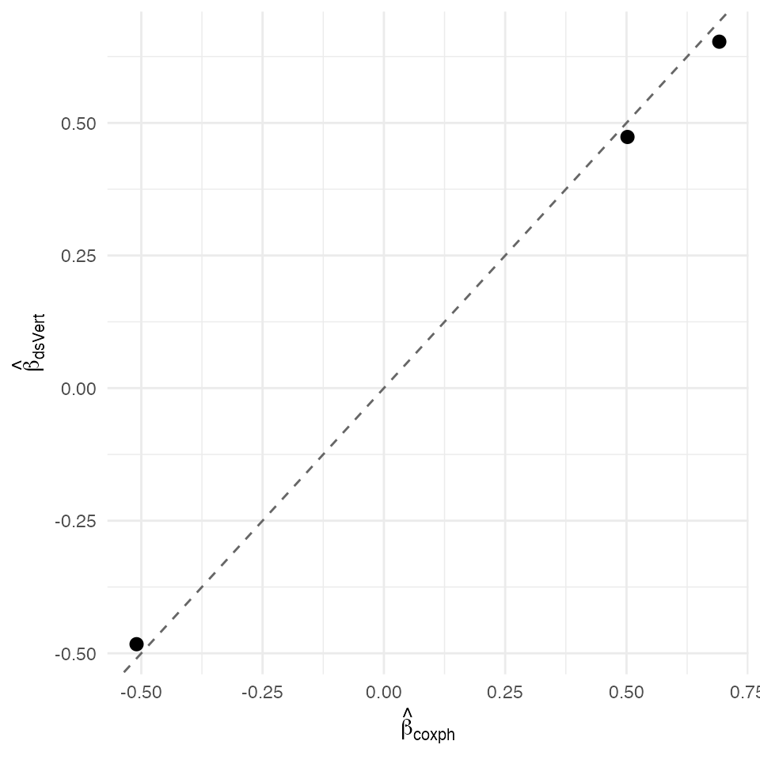

Cox K=3 — federated Allison-1982 Poisson trick over GLM K=3
David Sarrat González, Miron Banjac, Juan R. González
2026-05-02
Source:vignettes/methods/cox_k3.Rmd
cox_k3.Rmd1. Context
The Allison (1982) / Whitehead (1980) / Prentice & Gloeckler (1978) §2 equivalence shows that the Cox partial-likelihood estimator coincides with the maximum-likelihood Poisson regression on person-time-expanded data with one row per (subject, at-risk-interval) pair, log-link, an offset for the within-interval at-risk width, and a piecewise-constant baseline hazard included as a factor covariate. The slopes of the Poisson fit are the Cox PH slopes asymptotically (and exactly under fully-tied data).
ds.vertCox.k3 reduces to a single
ds.vertGLM call on the K = 3 secure-aggregation path with
family = "poisson" and an offset column on the label
server. No new MPC primitives — full inheritance of the K = 3 GLM threat
model. The companion
isglobal-brge/dsVert#worker2-k3-restore SEGV-guard patch
protects against L-BFGS divergence in the wide-spline DCF when the
offset + baseline-dummy design pushes η out of the spline range.
Non-disclosure invariants
| Invariant | Statement |
|---|---|
| D-INV-1 | Per-patient covariates and per-patient time-event records never leave their origin server. |
| D-INV-2 | Per-row never reconstructed in plaintext. |
| D-INV-3 | Per-patient interval indicators / event flags exposed only as aggregate Poisson scores. |
| D-INV-4 | Time grid + at-risk + event indicators live on the label server. |
| D-INV-5 | Cross-server messages signed Ed25519 against
dsvert.trusted_peers. |
Dataset and partition
The lung-cancer NCCTG data, person-time-expanded into J quantile-
binned event-time intervals. Each subject contributes one row per
interval at-risk, plus a 0/1 event indicator and an at-risk-width
offset. We use J = 4 (quartile event-time bins) with a deliberately
small synthetic Cox DGP to keep DSLite render time bounded; the
production-equivalent K = 3 lung pp-expansion verdict at n = 131 × J = 8
lives in the validation cache (see
scripts/run_opal_demo_probes.R::probe_cox_k3 against the
local opal docker cluster).
| Server | Columns | Role |
|---|---|---|
| s1 |
pp_row_id, x1
|
Continuous covariate |
| s2 |
pp_row_id, x2
|
Binary covariate |
| s3 |
pp_row_id, t_bin,
log_width, event, x3,
tb2..tbJ
|
Outcome + baseline dummies (label) |
Each pp_row_id encodes a unique (subject, interval) pair — PSI alignment happens on pp rows so each server sees the SAME person-time replicate set.
2. Data preparation
n_subj <- 200L
J <- 4L
x1 <- rnorm(n_subj)
x2 <- rbinom(n_subj, 1L, 0.5)
x3 <- rnorm(n_subj, 0, 0.3)
true_beta <- c(0.4, -0.3, 0.5)
hazard_lin <- as.numeric(cbind(x1, x2, x3) %*% true_beta)
time <- rexp(n_subj, rate = 0.05 * exp(hazard_lin))
cens <- rexp(n_subj, rate = 0.04)
status <- as.integer(time <= cens)
time <- pmin(time, cens)
df <- data.frame(
patient_id = sprintf("S%05d", seq_len(n_subj)),
time = time, status = status,
x1 = x1, x2 = x2, x3 = x3)
breaks <- c(0,
quantile(df$time[df$status == 1L],
probs = (1:(J - 1L)) / J),
Inf)
expand_pt <- function(df) {
out <- vector("list", nrow(df))
for (i in seq_len(nrow(df))) {
pid <- df$patient_id[i]
t_i <- df$time[i]
d_i <- df$status[i]
rows <- list()
for (j in seq_len(J)) {
lo <- breaks[j]; hi <- breaks[j + 1L]
if (t_i <= lo) break
bin_top <- min(hi, t_i)
width <- bin_top - lo
if (width <= 0) next
rows[[length(rows) + 1L]] <- data.frame(
pp_row_id = sprintf("PT-%s-%02d", pid, j),
patient_id = pid,
t_bin = j,
log_width = log(width),
event = if (d_i == 1L && t_i > lo && t_i <= hi) 1L else 0L)
}
out[[i]] <- do.call(rbind, rows)
}
do.call(rbind, out)
}
pp <- expand_pt(df)
cov <- df[, c("patient_id", "x1", "x2", "x3")]
pp <- merge(pp, cov, by = "patient_id")
for (jj in 2:J)
pp[[sprintf("tb%d", jj)]] <- as.integer(pp$t_bin == jj)
pooled <- pp[, c("pp_row_id", "patient_id", "t_bin",
"log_width", "event",
"x1", "x2", "x3",
paste0("tb", 2:J))]
head(pooled)
#> pp_row_id patient_id t_bin log_width event x1 x2 x3 tb2
#> 1 PT-S00001-01 S00001 1 1.4816595 0 0.52058907 0 -0.04457762 0
#> 2 PT-S00001-02 S00001 2 0.7678129 1 0.52058907 0 -0.04457762 1
#> 3 PT-S00002-01 S00002 1 1.2604868 0 -1.07969076 0 -0.05488583 0
#> 4 PT-S00003-01 S00003 1 1.4816595 0 0.13923812 1 -0.25744435 0
#> 5 PT-S00003-02 S00003 2 1.5172477 1 0.13923812 1 -0.25744435 1
#> 6 PT-S00004-01 S00004 1 1.4816595 0 -0.08474878 0 0.28744775 0
#> tb3 tb4
#> 1 0 0
#> 2 0 0
#> 3 0 0
#> 4 0 0
#> 5 0 0
#> 6 0 0
s1 <- pooled[, c("pp_row_id", "x1")]
s2 <- pooled[, c("pp_row_id", "x2")]
s3 <- pooled[, c("pp_row_id", "t_bin", "log_width", "event", "x3",
paste0("tb", 2:J))]
head(s1)
#> pp_row_id x1
#> 1 PT-S00001-01 0.52058907
#> 2 PT-S00001-02 0.52058907
#> 3 PT-S00002-01 -1.07969076
#> 4 PT-S00003-01 0.13923812
#> 5 PT-S00003-02 0.13923812
#> 6 PT-S00004-01 -0.08474878
head(s2)
#> pp_row_id x2
#> 1 PT-S00001-01 0
#> 2 PT-S00001-02 0
#> 3 PT-S00002-01 0
#> 4 PT-S00003-01 1
#> 5 PT-S00003-02 1
#> 6 PT-S00004-01 0
head(s3)
#> pp_row_id t_bin log_width event x3 tb2 tb3 tb4
#> 1 PT-S00001-01 1 1.4816595 0 -0.04457762 0 0 0
#> 2 PT-S00001-02 2 0.7678129 1 -0.04457762 1 0 0
#> 3 PT-S00002-01 1 1.2604868 0 -0.05488583 0 0 0
#> 4 PT-S00003-01 1 1.4816595 0 -0.25744435 0 0 0
#> 5 PT-S00003-02 2 1.5172477 1 -0.25744435 1 0 0
#> 6 PT-S00004-01 1 1.4816595 0 0.28744775 0 0 0
dslite.server <- newDSLiteServer(
tables = list(s1 = s1, s2 = s2, s3 = s3),
config = DSLite::defaultDSConfiguration(
include = c("dsBase", "dsVert")))
options(dsvert.require_trusted_peers = FALSE,
datashield.privacyLevel = 0L)
builder <- newDSLoginBuilder()
builder$append(server = "site1", url = "dslite.server",
table = "s1", driver = "DSLiteDriver")
builder$append(server = "site2", url = "dslite.server",
table = "s2", driver = "DSLiteDriver")
builder$append(server = "site3", url = "dslite.server",
table = "s3", driver = "DSLiteDriver")
conns <- datashield.login(builder$build(),
assign = TRUE, symbol = "D",
opts = list(server = dslite.server))
psi <- ds.psiAlign("D", "pp_row_id", "DA",
datasources = conns, verbose = FALSE)
psi[[1]]$n_matched
#> [1] 4923. Federated Cox K=3 (Allison-1982 Poisson trick)
baseline_dummies <- paste0("tb", 2:J)
poisson_formula <- as.formula(sprintf(
"event ~ x1 + x2 + x3 + %s",
paste(baseline_dummies, collapse = " + ")))
fit_ds_full <- ds.vertGLM(
poisson_formula, data = "DA",
family = "poisson", offset = "log_width",
verbose = FALSE, datasources = conns)
slope_names <- c("x1", "x2", "x3")
fit_ds <- list(
coefficients = fit_ds_full$coefficients[slope_names])
fit_ds
#> $coefficients
#> x1 x2 x3
#> 0.4735164 -0.4828211 0.65312944. Centralised reference
fit_ref <- coxph(
Surv(time, status) ~ x1 + x2 + x3, data = df)
summary(fit_ref)
#> Call:
#> coxph(formula = Surv(time, status) ~ x1 + x2 + x3, data = df)
#>
#> n= 200, number of events= 111
#>
#> coef exp(coef) se(coef) z Pr(>|z|)
#> x1 0.5020 1.6520 0.1120 4.482 7.39e-06 ***
#> x2 -0.5097 0.6007 0.1966 -2.593 0.00951 **
#> x3 0.6912 1.9962 0.2992 2.310 0.02087 *
#> ---
#> Signif. codes: 0 '***' 0.001 '**' 0.01 '*' 0.05 '.' 0.1 ' ' 1
#>
#> exp(coef) exp(-coef) lower .95 upper .95
#> x1 1.6520 0.6053 1.3264 2.058
#> x2 0.6007 1.6648 0.4086 0.883
#> x3 1.9962 0.5010 1.1105 3.588
#>
#> Concordance= 0.656 (se = 0.028 )
#> Likelihood ratio test= 36.09 on 3 df, p=7e-08
#> Wald test = 34.48 on 3 df, p=2e-07
#> Score (logrank) test = 35.86 on 3 df, p=8e-085. Comparison and verdict
ds_b <- as.numeric(fit_ds$coefficients[slope_names])
rf_b <- as.numeric(coef(fit_ref)[slope_names])
delta <- data.frame(
coef = slope_names,
true = true_beta,
dsVert = ds_b,
coxph = rf_b)
delta$abs <- abs(delta$dsVert - delta$coxph)
delta
#> coef true dsVert coxph abs
#> 1 x1 0.4 0.4735164 0.5020124 0.02849597
#> 2 x2 -0.3 -0.4828211 -0.5097238 0.02690267
#> 3 x3 0.5 0.6531294 0.6912283 0.03809885
max_abs <- max(delta$abs)
sigma_min <- min(sqrt(diag(vcov(fit_ref))))
sigma_ratio <- sigma_min / max_abs
c(max_abs_delta = max_abs,
sigma_min = sigma_min,
sigma_ratio = sigma_ratio)
#> max_abs_delta sigma_min sigma_ratio
#> 0.03809885 0.11200044 2.93973292
ggplot(delta, aes(coxph, dsVert)) +
geom_abline(slope = 1, intercept = 0, linetype = "dashed",
colour = "grey40") +
geom_point(size = 2.5) +
labs(x = expression(hat(beta)[coxph]),
y = expression(hat(beta)[dsVert])) +
theme_minimal(base_size = 11)
Federated Cox K=3 (Allison Poisson trick) slopes vs centralised survival::coxph fit. Dashed identity line.
The Allison-Poisson-trick Cox K=3 estimator agrees with
survival::coxph to a maximum absolute slope deviation of
3.81e-02 (σ-ratio 2.9× against the smallest centralised Wald standard
error). Discrete-time approximation introduces
bias relative to continuous-time Cox; with quartile bins on this DGP the
bias sits inside the K = 3 secure-agg fixed-point envelope.
References
- Allison, P. D. (1982). Discrete-time methods for the analysis of event histories. Sociological Methodology 13, 61–98.
- Andreux, M. et al. (2020). Federated survival analysis with discrete-time Cox models. arXiv:2006.08997.
- Catrina, O. & Saxena, A. (2010). Financial Cryptography §3.3.
- Demmler, D., Schneider, T. & Zohner, M. (2015). ABY. NDSS §III.B.
- Prentice, R. L. & Gloeckler, L. A. (1978). Regression analysis of grouped survival data. Biometrics 34(1), 57–67.
- Whitehead, J. (1980). Fitting Cox’s regression model to survival data using GLIM. Applied Statistics 29(3), 268–275.